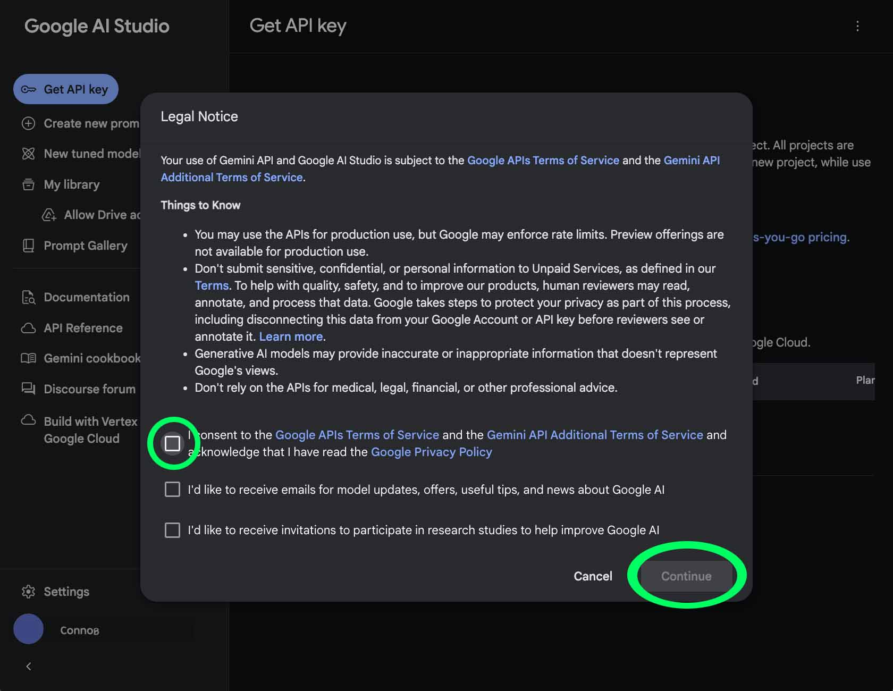
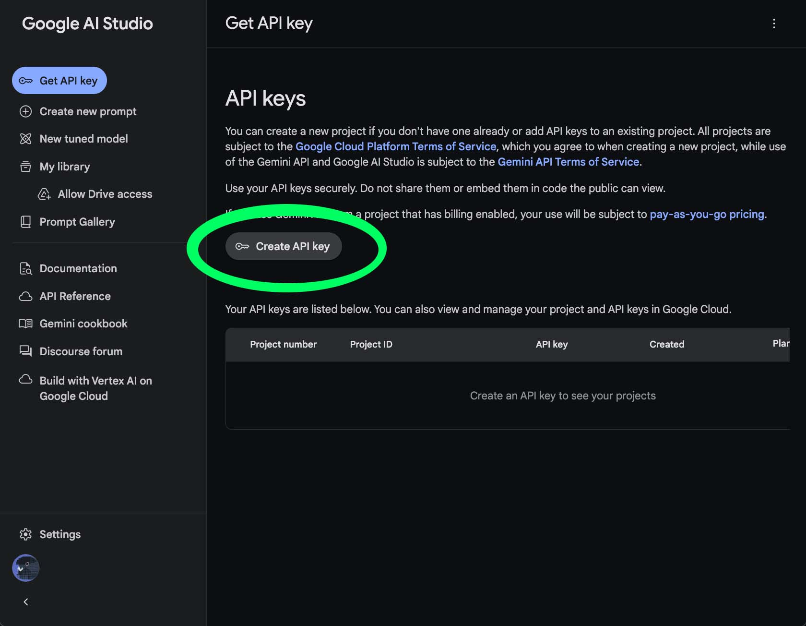
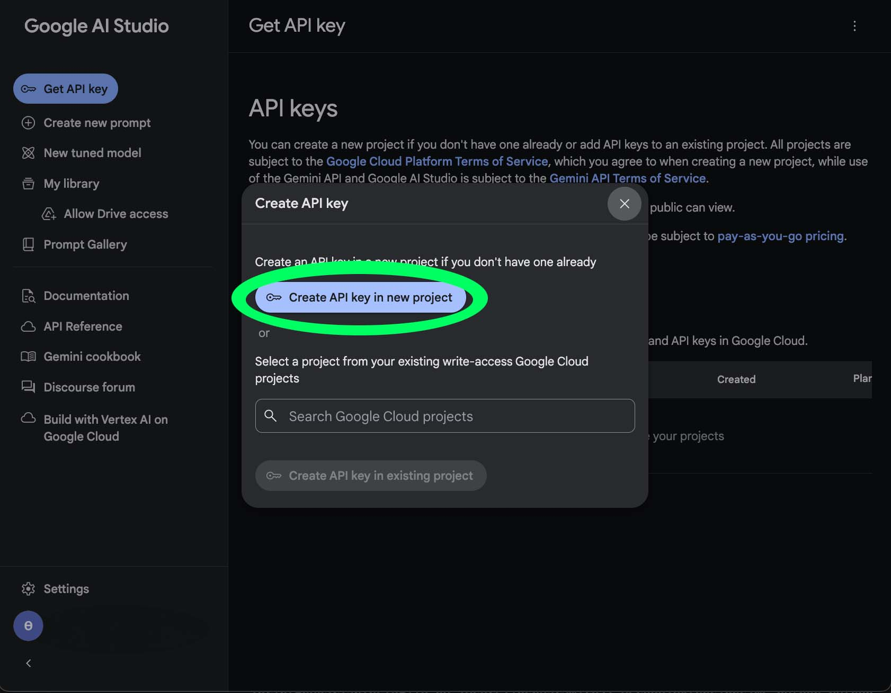
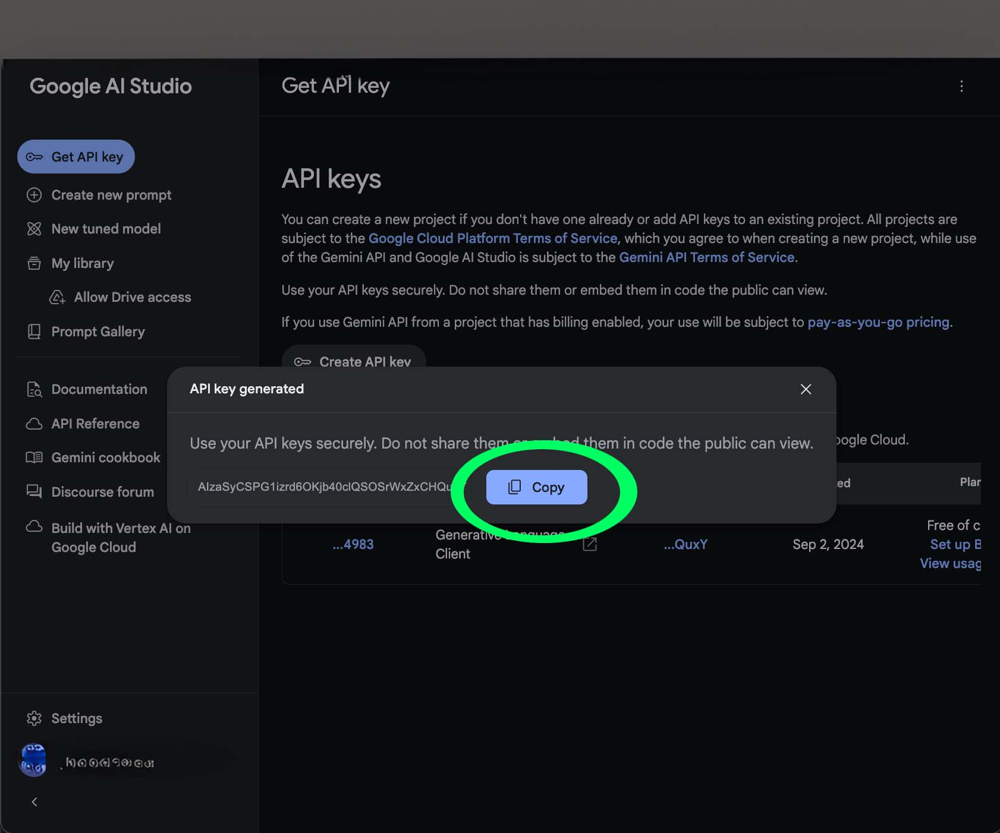
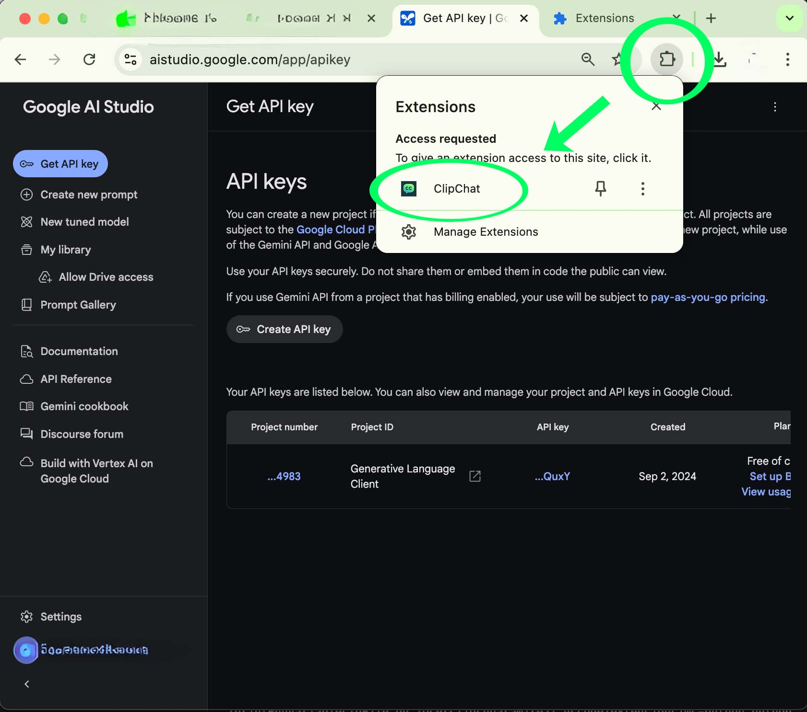
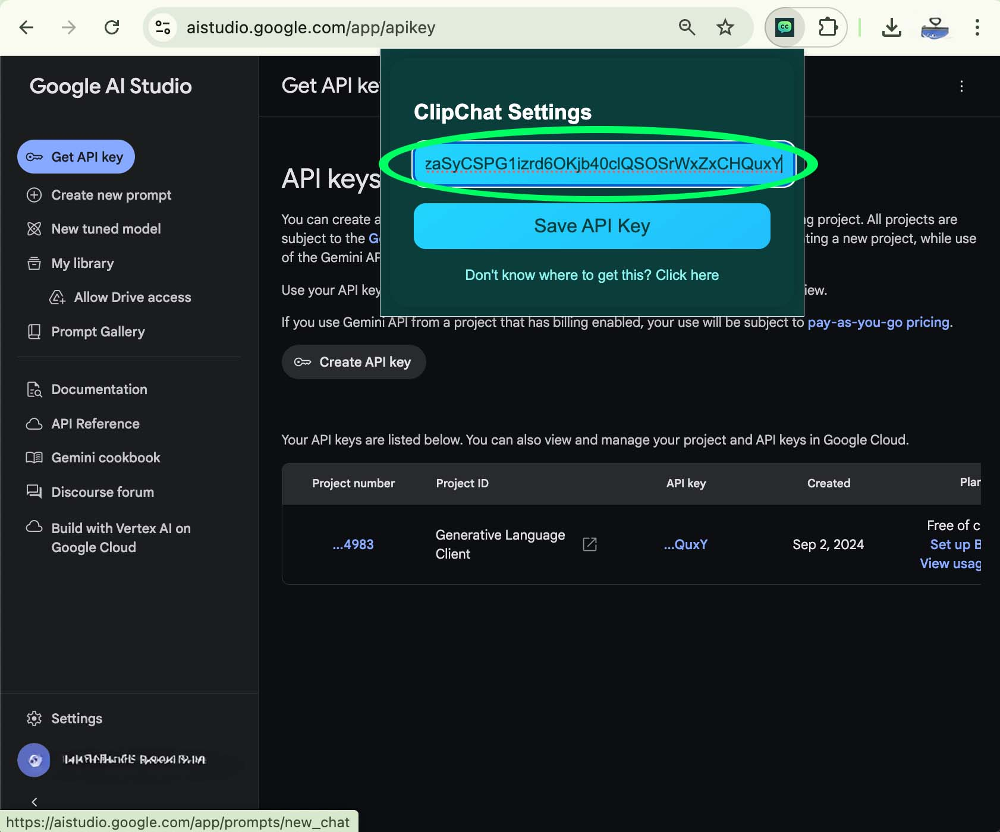
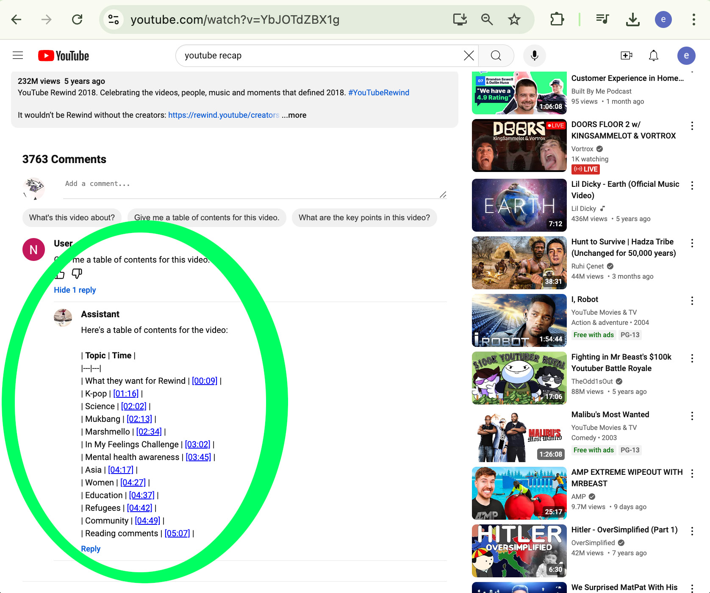

Follow these steps to set up ClipChat and start using it with your YouTube videos.
⏱️ Estimated time: < 5 minutes
Click the button below to navigate to the Google Cloud Console.
Go to Google Cloud Console Click the center button to Create a new API key.
Press the button to create a API key in a new project.
Press the button to copy the key to your clipboard.
In the top bar of your chrome browser press the puzzle icon to show your extension. Then click on the ClipChat name to open the extension's menu.
Click on the input box and paste the text in your clipboard. On Mac: press Command + v, or Windows: Ctrl + v. Then press save to store the API key.
Congratulations! The extension is now ready to use for any YouTube video.
Have fun!